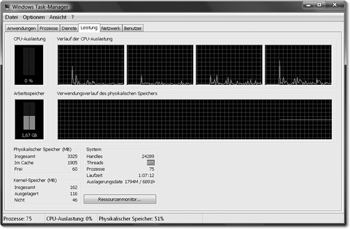

12 Einführung in die nebenläufige Programmierung
»Just Be.«
– Calvin Klein (* 1942)

12.1 Nebenläufigkeit
Moderne Betriebssysteme geben dem Benutzer die Illusion, dass verschiedene Programme gleichzeitig ausgeführt werden – die Betriebssysteme nennen sich multitaskingfähig. Was wir dann wahrnehmen, ist eine Quasiparallelität, die im Deutschen auch Nebenläufigkeit[183](Mitunter sind die Begriffe parallel und nebenläufig nicht äquivalent definiert. Wir wollen sie in diesem Zusammenhang aber synonym benutzen.) genannt wird. Diese Nebenläufigkeit der Programme wird durch das Betriebssystem gewährleistet, das auf Einprozessormaschinen die Prozesse alle paar Millisekunden umschaltet. Daher ist das Programm nicht wirklich parallel, sondern das Betriebssystem gaukelt uns dies durch eine verzahnte Bearbeitung der Prozesse vor. Wenn mehrere Prozessoren oder mehrere Prozessor-Kerne am Werke sind, werden die Programmteile tatsächlich parallel abgearbeitet. Aber ob nur ein kleines Männchen oder beliebig viele im Rechner arbeiten, soll uns egal sein.
Der Teil des Betriebssystems, der die Umschaltung übernimmt, heißt Scheduler. Die dem Betriebssystem bekannten aktiven Programme bestehen aus Prozessen. Ein Prozess setzt sich aus dem Programmcode und den Daten zusammen und besitzt einen eigenen Adressraum. Des Weiteren gehören Ressourcen wie geöffnete Dateien oder belegte Schnittstellen dazu. Die virtuelle Speicherverwaltung des Betriebssystems trennt die Adressräume der einzelnen Prozesse. Dadurch ist es nicht möglich, dass ein Prozess den Speicherraum eines anderen Prozesses korrumpiert; er sieht den anderen Speicherbereich nicht. Damit Prozesse untereinander Daten austauschen können, wird ein besonderer Speicherbereich als Shared Memory markiert. Amok laufende Programme sind zwar möglich, werden jedoch vom Betriebssystem gestoppt.
12.1.1 Threads und Prozesse
Bei modernen Betriebssystemen gehört zu jedem Prozess mindestens ein Thread (zu Deutsch Faden oder Ausführungsstrang), der den Programmcode ausführt. Damit werden also genau genommen die Prozesse nicht mehr parallel ausgeführt, sondern nur die Threads. Innerhalb eines Prozesses kann es mehrere Threads geben, die alle zusammen in demselben Adressraum ablaufen. Die einzelnen Threads eines Prozesses können untereinander auf ihre öffentlichen Daten zugreifen.
Abbildung 12.1: Windows zeigt im Task-Manager die Anzahl laufender Threads an.
Die Programmierung von Threads ist in Java einfach möglich, und die quasi parallel ablaufenden Aktivitäten geben dem Benutzer den Eindruck von Gleichzeitigkeit. In Java ist auch multithreaded Software möglich, wenn das Betriebssystem des Rechners keine Threads direkt verwendet. In diesem Fall simuliert die virtuelle Maschine die Parallelität, indem sie die Synchronisation und die verzahnte Ausführung regelt. Unterstützt das Betriebssystem Threads direkt, bildet die JVM die Thread-Verwaltung in der Regel auf das Betriebssystem ab. Dann haben wir es mit nativen Threads zu tun. Die 1:1-Abbildung ermöglicht eine einfache Verteilung auf Mehrprozessorsystemen, doch mit dem Nachteil, dass das Betriebssystem in den Threads auch Bibliotheksaufrufe ausführen kann, zum Beispiel, um das Ein- und Ausgabesystem zu verwenden oder für grafische Ausgaben. Damit dies ohne Probleme funktioniert, müssen die Bibliotheken jedoch thread-sicher sein. Damit hatten die Unix-Versionen in der Vergangenheit Probleme: Insbesondere die grafischen Standardbibliotheken X11 und Motif waren lange nicht thread-sicher. Um schwerwiegenden Problemen mit grafischen Oberflächen aus dem Weg zu gehen, haben die Entwickler daher auf eine native Multithreading-Umgebung zunächst verzichtet.
Ob die Laufzeitumgebung native Threads nutzt oder nicht, steht nicht in der Spezifikation der JVM. Auch die Sprachdefinition lässt bewusst die Art der Implementierung frei. Was die Sprache jedoch garantieren kann, ist die korrekt verzahnte Ausführung. Hier können Probleme auftreten, die Datenbankfreunde von Transaktionen her kennen. Es besteht die Gefahr konkurrierender Zugriffe auf gemeinsam genutzte Ressourcen. Um dies zu vermeiden, kann der Programmierer durch synchronisierte Programmblöcke einen gegenseitigen Ausschluss sicherstellen. Damit steigt aber auch die Gefahr von Verklemmungen (engl. deadlocks), die der Entwickler selbst vermeiden muss.
12.1.2 Wie parallele Programme die Geschwindigkeit steigern können
Auf den ersten Blick ist es nicht ersichtlich, warum auf einem Einprozessorsystem die nebenläufige Abarbeitung eines Programms geschwindigkeitssteigernd sein kann. Betrachten wir daher ein Programm, das eine Folge von Anweisungen ausführt. Die Programmsequenz dient zum Visualisieren eines Datenbank-Reports. Zunächst wird ein Fenster zur Fortschrittsanzeige dargestellt. Anschließend werden die Daten analysiert und der Fortschrittsbalken kontinuierlich aktualisiert. Schließlich werden die Ergebnisse in eine Datei geschrieben. Die Schritte sind:
- Baue ein Fenster auf.
- Öffne die Datenbank vom Netz-Server, und lies die Datensätze.
- Analysiere die Daten, und visualisiere den Fortschritt.
- Öffne die Datei, und schreibe den erstellten Report.
Was auf den ersten Blick wie ein typisches sequenzielles Programm aussieht, kann durch geschickte Parallelisierung beschleunigt werden.
Damit dies besser zu verstehen ist, ziehen wir noch einmal den Vergleich mit Prozessen. Nehmen wir an, auf einer Einprozessormaschine sind fünf Benutzer angemeldet, die im Editor Quelltext tippen und hin und wieder den Java-Compiler bemühen. Die Benutzer bekämen vermutlich die Belastung des Systems durch die anderen nicht mit, denn Editor-Operationen lasten den Prozessor nicht aus. Wenn Dateien kompiliert und somit vom Hintergrundspeicher in den Hauptspeicher transferiert werden, ist der Prozessor schon besser ausgelastet, doch geschieht dies nicht regelmäßig. Im Idealfall übersetzen alle Benutzer nur dann, wenn die anderen gerade nicht übersetzen – im schlechtesten Fall möchten natürlich alle Benutzer gleichzeitig übersetzen.
Übertragen wir die Verteilung auf unser Problem, nämlich wie der Datenbank-Report schneller zusammengestellt werden kann. Beginnen wir mit der Überlegung, welche Operationen parallel ausgeführt werden können:
- Das Öffnen des Fensters der Ausgabedatei und das Öffnen der Datenbank kann parallel geschehen.
- Das Lesen neuer Datensätze und das Analysieren alter Daten kann gleichzeitig erfolgen.
- Alte analysierte Werte können während der neuen Analyse in die Datei geschrieben werden.
Wenn die Operationen wirklich parallel ausgeführt werden, lässt sich bei Mehrprozessorsystemen ein enormer Leistungszuwachs verzeichnen. Doch interessanterweise ergibt sich dieser auch bei nur einem Prozessor, was in den Aufgaben begründet liegt. Denn bei den gleichzeitig auszuführenden Aufgaben handelt es sich um unterschiedliche Ressourcen. Wenn die grafische Oberfläche das Fenster aufbaut, braucht sie dazu natürlich Rechenzeit. Parallel kann die Datei geöffnet werden, wobei weniger Prozessorleistung gefragt ist, da die vergleichsweise träge Festplatte angesprochen wird. Das Öffnen der Datenbank wird auf den Datenbank-Server im Netzwerk abgewälzt. Die Geschwindigkeit hängt von der Belastung des Servers und des Netzes ab. Wenn anschließend die Daten gelesen werden, muss die Verbindung zum Datenbank-Server natürlich stehen. Daher sollten wir zuerst die Verbindung aufbauen.
Ist die Verbindung hergestellt, lassen sich über das Netzwerk Daten in einen Puffer holen. Der Prozessor wird nicht belastet, vielmehr der Server auf der Gegenseite und das Netzwerk. Während der Prozessor also vor sich hin döst und sich langweilt, können wir ihn besser beschäftigen, indem er alte Daten analysiert. Wir verwenden hierfür zwei Puffer: In den einen lädt ein Thread die Daten, während ein zweiter Thread die Daten im anderen Puffer analysiert. Dann werden die Rollen der beiden Puffer getauscht. Jetzt ist der Prozessor beschäftigt. Er ist aber vermutlich fertig, bevor die neuen Daten über das Netzwerk eingetroffen sind. In der Zwischenzeit können die Report-Daten in den Report geschrieben werden; eine Aufgabe, die wieder die Festplatte belastet und weniger den Prozessor.
Wir sehen an diesem Beispiel, dass durch hohe Parallelisierung eine Leistungssteigerung möglich ist, da die bei langsamen Operationen anfallenden Wartezeiten genutzt werden können. Langsame Arbeitsschritte lasten den Prozessor nicht aus, und die Wartezeit, die für den Prozessor beim Netzwerkzugriff auf eine Datenbank anfällt, kann für andere Aktivitäten genutzt werden. Die Tabelle gibt die Elemente zum Kombinieren noch einmal an:
| Ressource | Belastung |
| Hauptspeicherzugriffe | Prozessor |
| Dateioperationen | Festplatte |
| Datenbankzugriff | Server, Netzwerkverbindung |
Das Beispiel macht auch deutlich, dass die Nebenläufigkeit gut geplant werden muss. Nur wenn verzahnte Aktivitäten unterschiedliche Ressourcen verwenden, resultiert daraus auf Einprozessorsystemen ein Geschwindigkeitsvorteil. Daher ist ein paralleler Sortieralgorithmus nicht sinnvoll. Das zweite Problem ist die zusätzliche Synchronisation, die das Programmieren erschwert. Wir müssen auf das Ergebnis einer Operation warten, damit wir mit der Bearbeitung fortfahren können.
12.1.3 Was Java für Nebenläufigkeit alles bietet
Für nebenläufige Programme sieht die Java-Bibliothek eine Reihe von Klassen, Schnittstellen und Aufzählungen vor:
- Thread: Jeder laufende Thread ist ein Exemplar dieser Klasse.
- Runnable: Beschreibt den Programmcode, den die JVM parallel ausführen soll.
- Lock: Dient zum Markieren von kritischen Abschnitten, in denen sich nur ein Thread befinden darf.
- Condition: Threads können auf die Benachrichtigung anderer Threads warten.
Ihr Kommentar
Wie hat Ihnen das <openbook> gefallen? Wir freuen uns immer über Ihre freundlichen und kritischen Rückmeldungen.
 Jetzt bestellen
Jetzt bestellen


{kind=link}